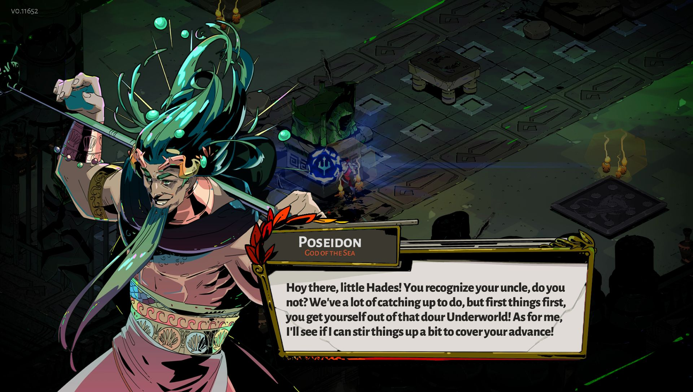

What does it take to make a great run-based game? Tight combat, of course. A variety of mix-and-match abilities that interact in interesting ways, certainly. Procedurally generated levels are nice. Progression and other systems that help
each new run stay fun for hours and hours are definitely essential. Hades, an isometric beat-em-up from developer Supergiant Games, offers all these things even in its early access launch state, and sets its sights even higher. By blending the
layered, mechanically meaningful storytelling elements of its last game, Pyre, with the addictive, almost endlessly replayable structures of games like Rogue Legacy and Dead Cells, Supergiant appears to be on its way to making a “rogue-lite” the
likes of which we’ve rarely seen. I say “on its way” because Hades is, as the “early access” tag suggests, unfinished. Though there are threads that have yet to be connected and whole areas likely in development and not available in the current
package, it already plays better than many of the indie action games I’ve played all year. In Hades, you control Zagreus, charming son of the titular God of Death. Zag seems a little too nice to torture the souls of the dead, so it makes perfect
sense that he’s trying to escape the Underworld and join the pantheon of Greek gods on Mount Olympus. Hades, doesn’t endorse his decision, though, setting up Zag’s repeated attempts to fight his way out of the stark but colorfully drawn Underworld
the long way — a task that no man or god has ever completed. He never stops Zag, but When he fails — and you will fail many, many times — Hades always seems has something to say about it. Vacillating between teasing quips and expressing parental
disappointment in his deep, Kratos-esque voice, he gets in his fair share of effective digs from run to run.
What really makes the story stand out are the residents of Hades’ court.
It’s as good a set up for rogue-lite as any, but what really makes the story stand out are the residents of Hades’ court. When you die, Hades deftly serves up intense hits of story in the quick moments between attempts to wade through the
underworld. And after each run, Zag returns to Hades’ palace, where the God of Death and his rotating retinue reside. As you make progress, either by getting further from home or through buying upgrades, Zag’s friends, servants, and mentors frequently
have new things to tell you. Layer by layer, those bits of gossip and anecdotes blend together to create a cast of beautifully articulated characters. Characters like Dusa, the adorably anxious Gorgon maid, and your mentor, the legendary warrior
Achilles, make it refreshing to come home and hear more about the Underworld and its residents. That fight is effectively a gauntlet of wave-based combat challenges in which Zag fights room after room of demons and shades in procedurally generated
arenas. In the current version, a full run consists of 27 chambers across two areas of the Underworld. As of now, there are a fairly limited number of room constructions: You will start to recognize the layouts quickly, but I wouldn’t necessarily
call Hades repetitive because of the variety that comes from its in-run progression. Like Dead Cells, which breaks up its monotony by giving you access to a randomly selected portion of its large arsenal of weapons and items on each run, Hades
gives you the ability to create a new and exciting version of Zag in every run. He always has three attacks — a primary strike, a “special,” and his powerful magic missile “cast shot” – and a dash to avoid danger. (No I-frames, Souls fans, so
plan accordingly). Initially, Zag only has a sword, but quickly gets more weapons — a bow, a shield, and a spear — which he can swap out between runs. Your choice of weapon defines plan of attack: With the sword, you have a classic slash and an
area-of-effect wave attack, but with the bow you have a chargeable standard shot or a crowd-controlling multi-arrow shot. Some of the weapons add extra options: The shield, for example, lets you hold the attack button to block, then release for
a stronger dash attack. Each weapon is easy to pick up and serves as an easy baseline for the extra abilities Zag earns on each run.
The way these upgrades intermingle and play off each other makes for a ton of variety.
No matter your weapon, these attacks start out fairly weak and straightforward but get stronger and more interesting at a rapid, satisfying pace. Each room you complete earns you some kind of reward — either resources to spend later on or
upgrades that further enhance Zag’s abilities. Most notable among these upgrades are boons: powers from the Greek gods that modify Zag’s core attacks or give him passive bonuses. Zeus, for example, can add chain lightning to your attacks that
arcs to nearby enemies. As you find more boons, you mix and match abilities and create a fun and very powerful plan of attack. Combining a boon from Poseidon that flings your enemies back with one from Ares that turns your cast shot into a roving
vortex that hurts enemies who stand in it allows you to set up a way control crowds and keep them away from you. Add to that a shield-specific upgrade that stuns enemies when they hit a wall, and you can maximize the damage you deal out with every
combo. The way these upgrades intermingle and play off each other, especially when you get special versions of each attack, makes for a ton of variety.

Since your boons reset after every death, every run feels like another chance to build a new and exciting character. Changing up your tactics run to run based on the upgrades you find makes the repetitive elements of Hades — namely a limited
number of room layouts and enemy types — feel fresh with every time I start over, even after playing for hours.
Customization is king in Hades.
Not all is lost in death, though, because you can also use Darkness (a currency earned in combat) to give Zag permanent upgrades across runs. Rather than boosting core stats, like attack and defense, these perks are often more nuanced and
situational — like enhanced damage when hitting an enemy in the back — or geared to make things easier for you in future runs, such as bonus chances to earn more powerful versions of boons. Customization is king in Hades, so all of these upgrades
can be redistributed at any time, which can be helpful if you want to adjust your Darkness upgrades to suit a different weapon. Hades’ biggest current stumbling blocks are its two boss fights, which appear at specific points in each run. They
do offer interesting attack patterns and a new kind of challenge to break up the generally samey wave-based rooms, but they definitely overstay their welcome: both bosses have so much health that their fights drag for much longer than you’d spend
in any other room. The time it takes to learn their attack patterns and upgrade Zag to counter their attacks made me feel stalled in a way that I don’t in most other run-based games, primarily because failing to advance in the dungeon staunches
the flow of the story. There are still some areas of Hades, particularly around the story, which don’t go anywhere yet because it remains unfinished. For example, as in Pyre, Zag can earn friendship points with the members of Hades’ court and
the Greek gods by giving them Ambrosia that he finds in combat, but while some bits of dialogue lay out how furthering those relationships may lead to new upgrades and more story progress, the rewards are definitely limited to a single transaction
with each character at the moment.
Verdict
Hades nails the core elements of the rogue-lite — tight combat, meaningful customization, varied abilities that differentiate runs, and interesting progression — all laced with a meaningful story hook. It’s one of the few games where the
fact that it will keep changing and growing just makes me want to play it more. There is a big difference between a great Early Access release and a great finished game, but Hades has all the makings of something special. (I would expect nothing
less from Supergiant.) I don’t see any reason to wait for its final release, because it’s great even in its unfinished state.